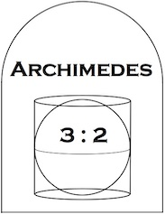
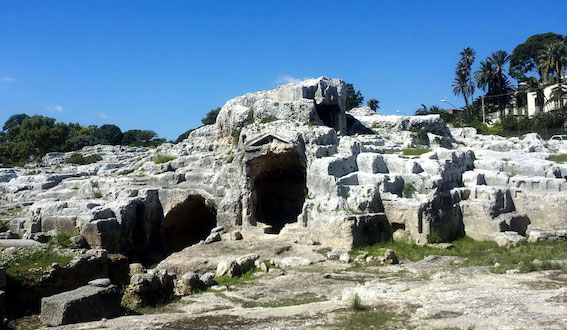
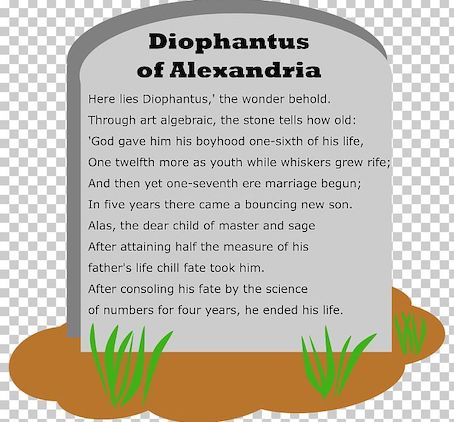
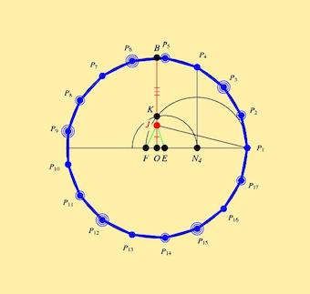
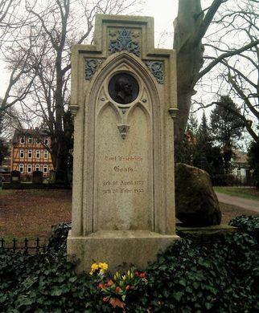

古往今来，数学家们的墓志铭最为言简意赅。他们的墓碑上往往只是刻着一个图形或写着一个数，但这些形和数， 却代表了他们一生的执着追求和闪光的业绩
公元前214年，罗马将军马塞拉斯率军攻破叙拉古城，混乱中阿基米德被一个罗马士兵杀害，但马塞拉斯本人却一向仰慕阿基米德，
于是为他修建了坟墓，并在墓碑上刻下一个圆柱，圆柱里内切着一个球，直径恰与圆柱的高相等。 这个图形表达了阿基米德的如下发现：
球的体积和表面积都等于它外接圆柱体体积和表面积的2/3

证明：设圆柱半径为r，高度为2r，则圆柱的体积V和表面积S分别为：
V = πr^2·2r = 2πr^3设球半径为r，则球的体积V和表面积S分别为：
S = 2πr^2+2πr·2r = 6πr^2
V = 4/3πr^3可得球的体积和表面积都等于它外接圆柱体体积和表面积的2/3
S = 4πr^2

真实性考证，通过网上搜索可以查到叙拉古城位于意大利西西里岛的东部锡拉库萨地区，附近有一处人工凿砌的石窟(如图)，
据说就是阿基米德之墓所在地，但没有墓碑
因为留下了不少数学著作，丢番图被称为代数学鼻祖，但是生平事迹不详，他的墓志铭是一道求他本人寿命的数学题， 看起来像这样

解：设丢番图的寿命为x年，则可以列出如下方程：
x/6 + x/7 + x/12 + 5 + x/2 + 4 = x最后解方程得x=84
真实性考证，目前只知道丢番图公元2-3世纪生活在埃及的亚历山大港，没有记录表明他的墓在何处， 以上关于墓志铭的描述仅来自公元5世纪编写的一本书
1795年，高斯进入哥廷根大学学习，18岁的他解决了正17边形尺规作图的问题。要知道自欧几里得以来，
这个问题困扰了数学界2000余年， 据说高斯本人对此也十分满意，
以至于后来他要求在他的墓碑上刻一个正十七边形作为墓志铭

正17边形尺规作图的方法相当复杂，这里不引述，在网上可以查到

真实性考证，通过网上搜索可以查到高斯墓位于哥廷根大学校园内(见上图)，有不少慕名者曾去检查过， 没有发现墓碑上有正17边形
很遗憾以上三个墓志铭都未得到证实，就像乔布斯苹果上的缺口并非是图灵咬去的，
数学家们的墓志铭、生平事迹都不一定是真实的，
但这些不重要，重要的是，他们所发现的数学规律才是绝对真理，超越所有空间和时间，亘古不变